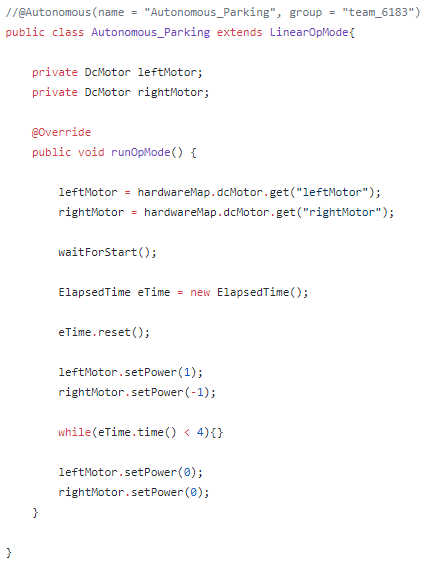

Time Based Auto
The most basic kind of autonomous robot movement is time-based. These closed loop autonomous programs have the robot apply a certain voltage to its motors for a specific amount of time. Though simple, these kinds of movements are prone to error, as a small difference in the charge of a battery could disrupt what was measured earlier to be a perfect run.
Basic Setup
A time-based autonomous is not very complicated. However, the basic setup necessary for the robots to be able to run the autonomous is indeed difficult.
The image on the left shows the setup of the most basic time-based autonomous.
- The class extends LinearOpMode, which executed everything after the waitForStart(); method in order top to bottom.
- After instantiating two instances of the DcMotor class with value as null, the runOpMode method begins.
- The two motors are then set to the motors in the hardwareMap under the names "leftMotor" and "rightMotor".
- After the program has been started, a timer is created, and then reset.
- The motors are set to a certain power. After four seconds have passed, the powers are set back to zero.